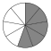

The numbered examples below are interactive: the numbers change every time you load the page. Type your answer, press Enter or Check, and use New numbers to practice again.
The Meaning and Properties of Fractions
A fraction is written
ba← numerator← denominator
The denominator tells us how many equal parts the whole has been broken into.
The numerator tells us how many of those parts we are talking about.
A whole can be broken into many differently sized pieces. In Figure 1 one square is broken into pieces of size 21, 41, 81 and 161.
Figure 1. Pieces of a whole
To visualize 43 we break a box into four equal pieces and shade three of them. To visualize 95 we break a circle into nine equal slices and shade five.
4395

Example 1
Name the numerator and denominator.
a.43b.125c.11ad.19
Proper and Improper Fractions
A fraction ba is a proper fraction if a<b. For example 43,81,10a (when a<10).
A fraction ba is an improper fraction if a≥b. For example 59,1010,16.
Fractions can be shown on a number line. Here the space from 0 to 1 is broken into four equal pieces of size 41. Each arrow starts at 0 and shows 41, 42, 43 and 44.
Equivalent Fractions
Look at the two squares below. Both have the same amount shaded, even though they are broken into different numbers of pieces.
42=21
The same is true for circles. 62 and 31 shade the same amount, and so does 124:
6231124
31=62=124
Fractions that name the same amount are called equivalent fractions.
We can create an equivalent fraction by multiplying the numerator and denominator by the same non-zero number n:
ba=b⋅na⋅n
We can also create an equivalent fraction by dividing the numerator and denominator by the same non-zero number n:
Two more facts we will use often: any number divided by 1 is itself, and any (non-zero) number divided by itself is 1.
1a=aaa=1(a=0)
Example 2
Write each fraction as a whole number.
a.19b.99c.918d.927
Example 3
Which of 85,65,43,32 is the smallest? Write all four with a denominator of 24 and then order them from smallest to largest.
Prime Numbers
A prime number is a whole number greater than 1 that has exactly two divisors: itself and 1. In other words, we cannot divide a prime by any other number and get a whole number back (without a remainder).
Prime numbers: {2,3,5,7,11,…}
A composite number is a whole number greater than 1 that is not a prime number. That is, there exists a number other than itself and 1 that we can divide a composite number by and get a whole number.
Example 4
Identify each number as prime or composite.
a.17b.12
Prime Factorization
Every composite number can be broken into prime numbers. One way to do this is with a factor tree: split the number into two factors and keep splitting any factor that is not prime. We circle the primes. Reading all of the circled primes gives the prime factorization.
For 12:
12=2⋅2⋅3=22⋅3
For 108:
108=2⋅2⋅3⋅3⋅3=22⋅33
Example 5
Find the prime factorization of each number. Write your answer with exponents.
a.60b.352c.125
Instead of a factor tree we can divide by primes over and over until we reach 1 (or a prime). For instance 352÷2=176, 176÷2=88, and so on.
Lowest Terms
A fraction is in lowest terms when its numerator and denominator have no factors in common (other than 1).
If we divide the numerator and denominator by 2,
86=8÷26÷2=43
and 43 is the lowest term of 86.
Prime factorizations make it easy to find common factors. For 1512 we have 12=2⋅2⋅3 and 15=3⋅5, so
1512=3⋅52⋅2⋅3=54.
Example 6
Reduce each fraction to lowest terms.
a.2420b.426c.404d.−30105e.24136
Multiplication with Fractions
Rule. The product of two fractions is a fraction whose numerator is the product of the two numerators and whose denominator is the product of the two denominators.
ba⋅dc=b⋅da⋅c
Example.
53⋅72=5⋅73⋅2=356
Remember 5=15, so a whole number can be multiplied with a fraction too.
83⋅5=83⋅15=8⋅13⋅5=815
Parentheses first:
21(43⋅51)=21(203)=2⋅201⋅3=403
When the numbers are larger, factor and cancel before multiplying.
When we add fractions with the same denominator, we can factor out 71:
72+73=2(71)+3(71)=71(2+3)=71(5)=15⋅71=75
Note that a⋅b1=1a⋅b1=ba.
Rule. To add two fractions that have the same denominator, we add their numerators to get the numerator of the answer. The denominator is the same as the original fractions.
The Least Common Denominator (LCD) for a set of denominators is the smallest number that is exactly divisible by each denominator.
Example. Find the LCD for 125 and 187.
Factor each denominator: 12=2⋅2⋅3 and 18=2⋅3⋅3. The LCD uses each prime as many times as it appears in the denominator where it appears most:
LCD=2⋅2⋅3⋅3=4⋅9=36
Notice 36=12⋅3 and 36=18⋅2. So
125=12⋅35⋅3=3615187=18⋅27⋅2=3614
125+187=3615+3614=3615+14=3629
To add or subtract fractions with different denominators: Step 1. Factor the denominators. Step 2. Rewrite each fraction as an equivalent fraction with the LCD as its denominator. Step 3. Add or subtract the numerators of the equivalent fractions. Step 4. Reduce the fraction.
Example.43+61. Here 4=2⋅2 and 6=2⋅3, so LCD=2⋅2⋅3=12.
43+61=4⋅33⋅3+6⋅21⋅2=129+122=1211
Example.157−103. Here 15=3⋅5 and 10=2⋅5, so LCD=3⋅5⋅2=30.
157−103=3014−309=3014−9=305=61
Example.53−61. The LCD is 5⋅6=30.
53−61=5⋅63⋅6−6⋅51⋅5=3018−305=3013
Example.61+81+41. Here 6=2⋅3, 8=2⋅2⋅2, 4=2⋅2, so LCD=3⋅2⋅2⋅2=24.
244+243+246=244+3+6=2413
Example. A whole number is a fraction over 1: 3−65=13−65=618−65=613.